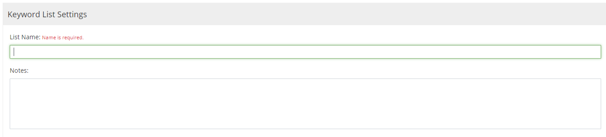
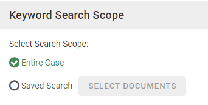
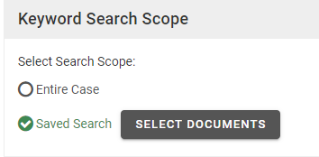

To create a keyword list and schedule it for processing:
-
Getting started:
-
In

-
Click the Enter Case button.

The Visual Dashboard displays.

-
-
Click the Keywords Management icon
 on the left panel.
on the left panel.
In the Keyword List panel, click  .
.

In the Keyword List Settings area, enter a List Name (up to 85 characters) and optionally Notes (up to 500 characters). Alphanumeric, spaces, and/or underscore characters can be used.

In the Keyword Search Scope area, select Entire Case or a Saved Search.


|
|
Note:
|

In the Keyword Scheduling area, select the frequency and time of processing of the keyword list:

|
Option |
Description |
|
Occurs immediately |
The list will be processed one time, immediately after the list is completed (per the following steps). |
|
Occurs once at (time) |
Run
the list automatically (if case changes have occurred) once
a day at the specified hour. For example, re-process the list
every day at 10 p.m. Enter or click |
|
Occurs every... Starting/Ending at (times) |
Run the list automatically (if case changes have occurred) at a specified interval, 0.25 to 23.75 hour(s), over the specified time period. Enter or use the up/down arrows to select the interval, and enter the starting and ending hours or click to select them. For example, rebuild the index every two hours between 7 a.m. and 7 p.m. (i.e., when reviewers are at work): |
|
Auto save results after processing |
Select this option if you want to create the keyword tags and field after the keyword list is processed. You can also create them separately, at a later time. |
 to enter/choose the
time.
to enter/choose the
time.Click  . An empty keywords list with the name entered in the List Name field is saved.
. An empty keywords list with the name entered in the List Name field is saved.
In the Keywords area, click ADD as shown in the following figure.

When you click the ADD button, a dialog box displays. Enter or paste (Ctrl+V) the needed list of search terms and phrases, one term or phrase per line.
|
|
Note: Search phrases of over 250 characters will be truncated. |

When all keywords have been added to the list, click ADD in the dialog box.

Click the Schedule Job button. The job will be run at the scheduled time.
|
|
Note: This button is not available if the keyword list status is Completed (indicating the search has been run and results are up to date). |
If
your job is scheduled for a time other than immediately, you can check
the status in the Job Manager. For more information about the Job Manager, see
Repeat these steps to create and schedule other keyword lists.